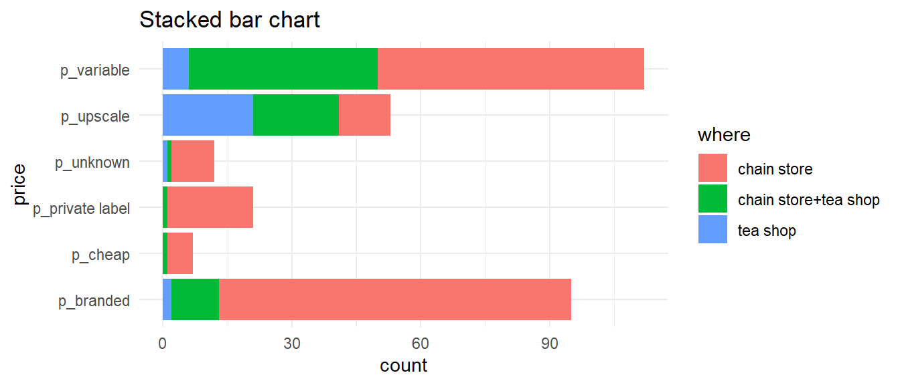

Rows: 300
Columns: 36
$ breakfast <fct> breakfast, breakfast, Not.breakfast, Not.breakfast, b…
$ tea.time <fct> Not.tea time, Not.tea time, tea time, Not.tea time, N…
$ evening <fct> Not.evening, Not.evening, evening, Not.evening, eveni…
$ lunch <fct> Not.lunch, Not.lunch, Not.lunch, Not.lunch, Not.lunch…
$ dinner <fct> Not.dinner, Not.dinner, dinner, dinner, Not.dinner, d…
$ always <fct> Not.always, Not.always, Not.always, Not.always, alway…
$ home <fct> home, home, home, home, home, home, home, home, home,…
$ work <fct> Not.work, Not.work, work, Not.work, Not.work, Not.wor…
$ tearoom <fct> Not.tearoom, Not.tearoom, Not.tearoom, Not.tearoom, N…
$ friends <fct> Not.friends, Not.friends, friends, Not.friends, Not.f…
$ resto <fct> Not.resto, Not.resto, resto, Not.resto, Not.resto, No…
$ pub <fct> Not.pub, Not.pub, Not.pub, Not.pub, Not.pub, Not.pub,…
$ Tea <fct> black, black, Earl Grey, Earl Grey, Earl Grey, Earl G…
$ How <fct> alone, milk, alone, alone, alone, alone, alone, milk,…
$ sugar <fct> sugar, No.sugar, No.sugar, sugar, No.sugar, No.sugar,…
$ how <fct> tea bag, tea bag, tea bag, tea bag, tea bag, tea bag,…
$ where <fct> chain store, chain store, chain store, chain store, c…
$ price <fct> p_unknown, p_variable, p_variable, p_variable, p_vari…
$ age <int> 39, 45, 47, 23, 48, 21, 37, 36, 40, 37, 32, 31, 56, 6…
$ sex <fct> M, F, F, M, M, M, M, F, M, M, M, M, M, M, M, M, M, F,…
$ SPC <fct> middle, middle, other worker, student, employee, stud…
$ Sport <fct> sportsman, sportsman, sportsman, Not.sportsman, sport…
$ age_Q <fct> 35-44, 45-59, 45-59, 15-24, 45-59, 15-24, 35-44, 35-4…
$ frequency <fct> 1/day, 1/day, +2/day, 1/day, +2/day, 1/day, 3 to 6/we…
$ escape.exoticism <fct> Not.escape-exoticism, escape-exoticism, Not.escape-ex…
$ spirituality <fct> Not.spirituality, Not.spirituality, Not.spirituality,…
$ healthy <fct> healthy, healthy, healthy, healthy, Not.healthy, heal…
$ diuretic <fct> Not.diuretic, diuretic, diuretic, Not.diuretic, diure…
$ friendliness <fct> Not.friendliness, Not.friendliness, friendliness, Not…
$ iron.absorption <fct> Not.iron absorption, Not.iron absorption, Not.iron ab…
$ feminine <fct> Not.feminine, Not.feminine, Not.feminine, Not.feminin…
$ sophisticated <fct> Not.sophisticated, Not.sophisticated, Not.sophisticat…
$ slimming <fct> No.slimming, No.slimming, No.slimming, No.slimming, N…
$ exciting <fct> No.exciting, exciting, No.exciting, No.exciting, No.e…
$ relaxing <fct> No.relaxing, No.relaxing, relaxing, relaxing, relaxin…
$ effect.on.health <fct> No.effect on health, No.effect on health, No.effect o…Chapter 2:
Exploratory Data Analysis (EDA)
Bar charts — one variable

Bar charts — two variables


Bar charts - flipped


Pie charts (yeah nah)


Pie charts (yeah nah)

- Pie charts are popular but not usually the best way to show proportional data
- Requires comparison of angles or areas of different shapes
- Bar charts are almost always better
https://shiny.massey.ac.nz/anhsmith/demos/explore.counts.of.factors/
Histograms
Divide the data range into “bins”, count the occurrences in each bin, and make a bar chart.
Y-axis can show raw counts, relative frequencies, or densities
set.seed(1234); dfm <- data.frame(X = rnorm(50, 100))
p1 <- ggplot(dfm, aes(X)) + geom_histogram(bins = 20) + ylab("count") + ggtitle("Frequency histogram", "Heights of the bars sum to n")
p2 <- ggplot(dfm) + aes(x = X, y = after_stat(count/sum(count))) + geom_histogram(bins = 20) + ylab("relative frequency") +
ggtitle("Relative frequency histogram", "Heights sum to 1")
p3 <- ggplot(dfm) + aes(x = X, y = after_stat(density)) + geom_histogram(bins = 20) +
ggtitle("Density histogram","Heights x widths sum to 1")
library(patchwork); p1+p2+p3
Frequency polygon & kernel density plots

Summary statistics for EDA

Some Q-Q Plot patterns
Case a: Quantiles of Y (mean/median etc) are higher than those of X
Case b: Spread or SD of Y > spread or SD of X
Case c: X and Y follow different distributions

- R function:
qqplot().
- R function:

Bivariate relationships
A scatter plot shows the relationship between two quantitative variables. It can highlight linear or non-linear relationships, gaps/subgroups, outliers, etc. A lowess smoother or 2D density can help show the relationship.

Bivariate relationships
A scatter plot shows the relationship between two quantitative variables. It can highlight linear or non-linear relationships, gaps/subgroups, outliers, etc. A lowess smoother or 2D density can help show the relationship.

Marginal Plot
Shows both bivariate relationships and univariate (marginal) distributions

Correlation coefficients
The Pearson correlation coefficient measures the linear association between two variables.

Network plots

3-D Plots
A bubble plot, shows the third (fourth) variable as point size (colour).

Conditioning plots
Conditioning Plots (Coplots) show two variables at different ranges of third variable

More R graphs
Build plots in a single layout (R packages patchwork or gridExtra)

Time series trend types
Requires a (parametric) model to fit the trend (covered later)

Non-parametric fits can also be made
Sub-series plots
Seasonality is easily seen graphically when grouping variables are used

Summary
Size
- For small datasets, we cannot be too confident in any patterns we see. More likely for patterns to occur ‘by chance’.
- Some displays are more affected by sample size than others
Shape
- In can be interesting to display the overall shape of distribution.
- Are there gaps and/or many peaks (modes)?
- Is the distribution
symmetrical? Is the distributionnormal?
Outliers
- Boxplots & scatterplots can reveal outliers
- More influential than points in the middle
Graphs should be simple and informative; certainly not misleading!